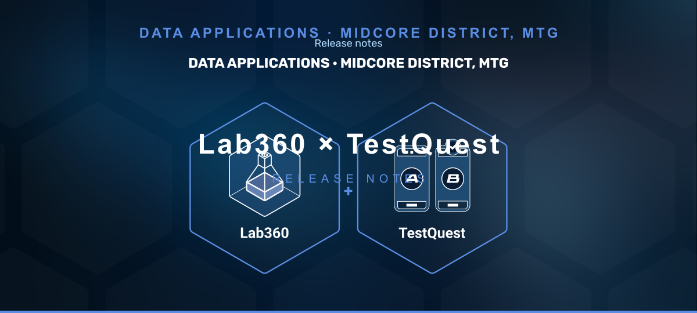

|

|
| TestQuest Analytics - Now Inside Lab360 |
| Analyze your experiments with TestQuest - the DS team's analytics engine - without leaving Lab360 |
| Until now, configuring experiments in Lab360 and analyzing them in TestQuest meant switching between two systems. This release brings TestQuest analytics directly into Lab360. |
| ▸ | Embedded TestQuest View — Open experiment analytics in a full-screen view directly from the Lab360 grid. Filters, tabs, and navigation work exactly as in TestQuest. | | ▸ | New Analytics Step in the Wizard — A new step in the experiment wizard lets you configure your analysis upfront: choose follow-up days (for example, day 7, 30) and select dimensions auto-detected from your SQL query (country, platform, seniority, etc.). |
| This release covers Manual Allocation experiments. Automatic Allocation support - is coming next. |
|
| Create a Manual Allocation experiment in Lab360. | | In the Target Audience step, provide your SQL query with player_id, group_id, allocation_ts, reg_date, and any dimension columns. | | In the new Analytics step, select your follow-up days and choose which detected dimensions to include. | | Once the experiment is running, click it from the main grid to open the embedded TestQuest analysis view. |
| ▸ | Automatic Allocation Support
Full analytics for auto-allocated experiments, including custom CASE WHEN dimension logic. | | ▸ | Edit Mode
Update your SQL query, follow-up days, and dimension selection after the experiment is already configured. |
|
| Built in collaboration with the Data Science team (BP). |
| Questions or feedback? Reach out - we'd love to hear how this fits your workflow. |
|
|
|